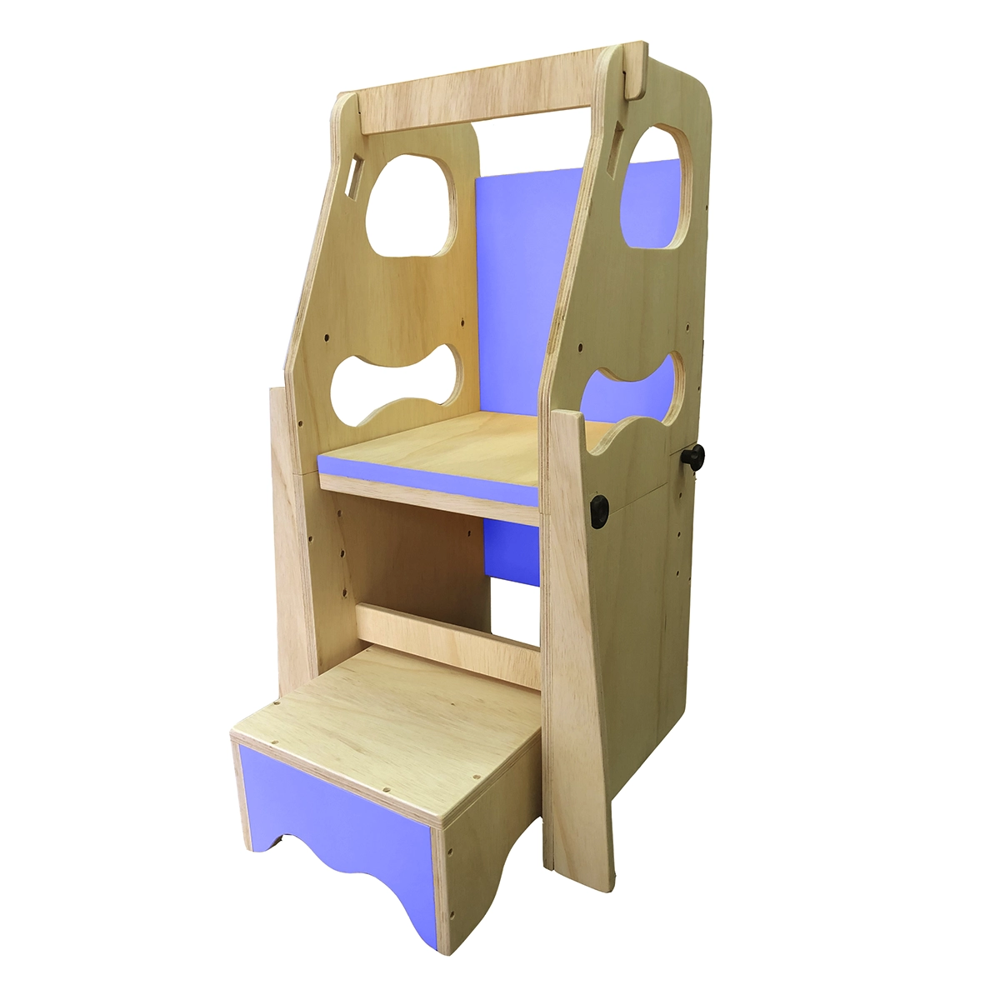
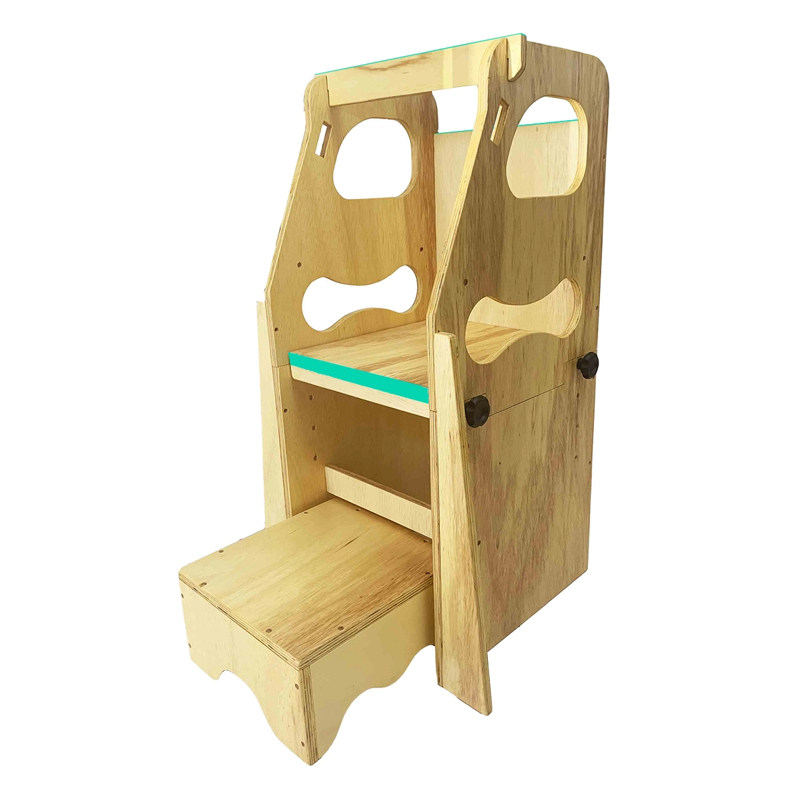
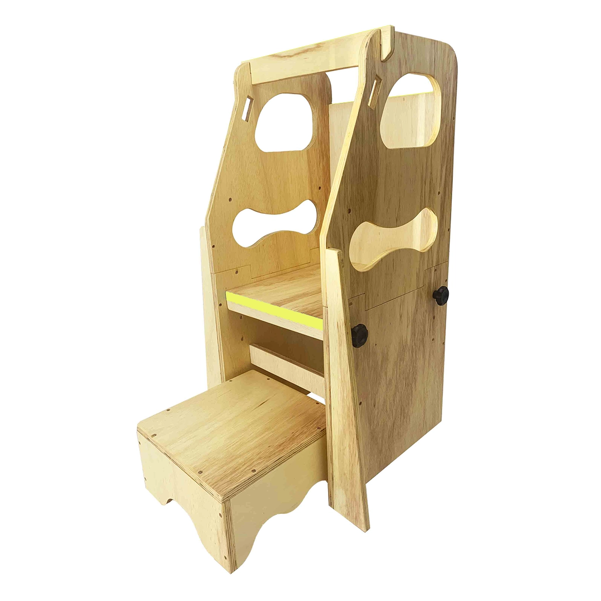
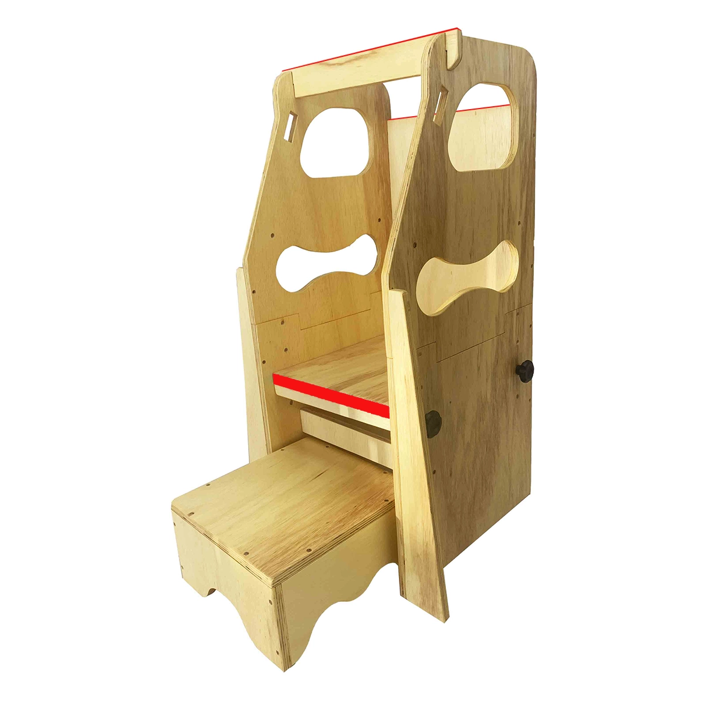
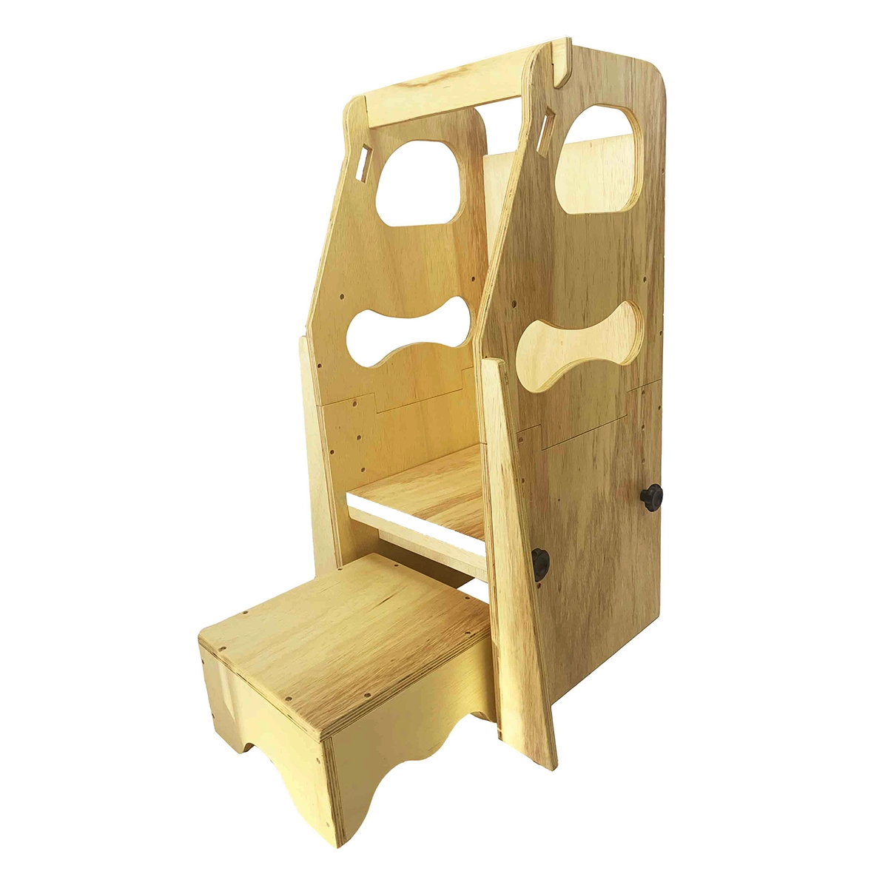
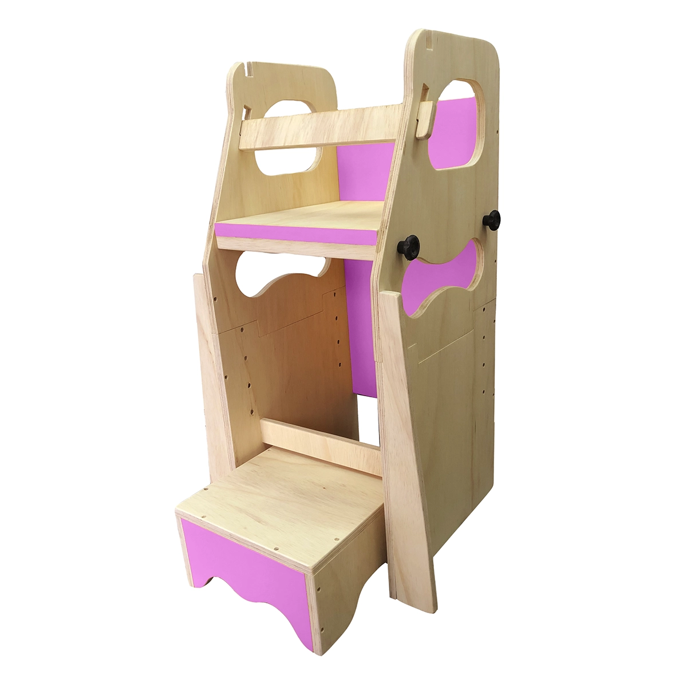
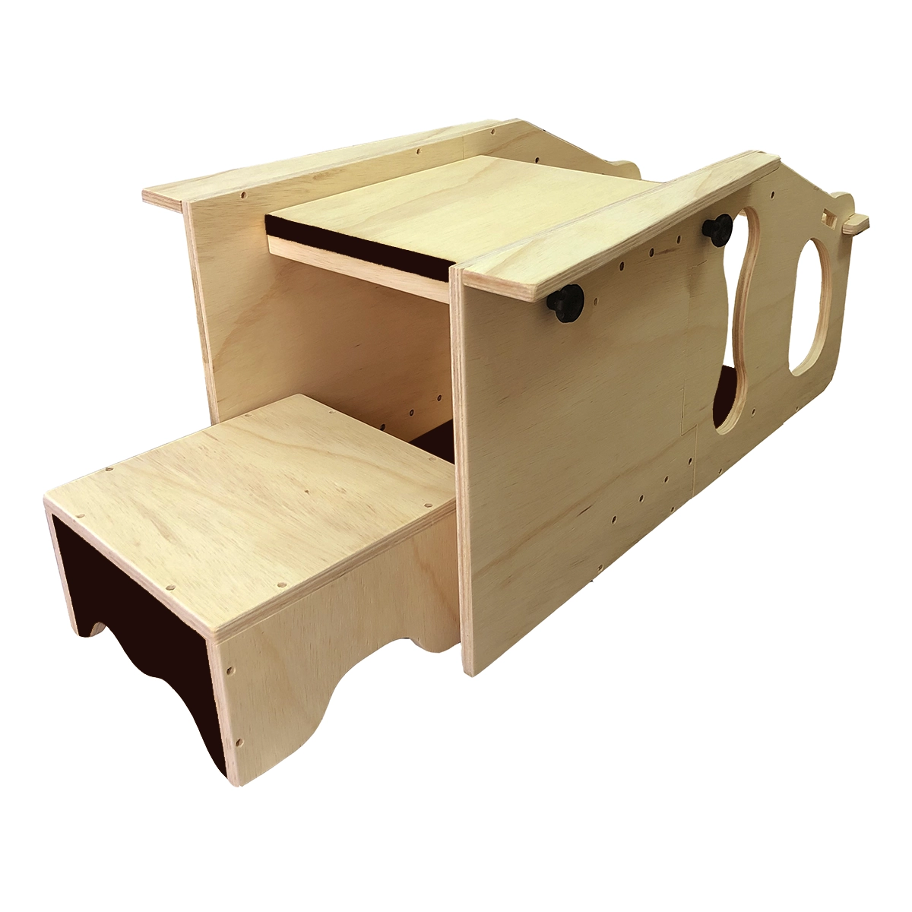

Torre da Descoberta
Conheça os dois modelos de Torre de Aprendizagem da Pau D'Alho e escolha o que faz mais sentido para a rotina da sua família.
Escolha o modelo ideal
Os dois modelos de torres que desenvolvemos seguem a proposta de incentivar a autonomia infantil com segurança. A diferença entre elas está no design e na versatilidade de uso.

Torre 3 em 1
Modelo multifuncional que pode ser usado como Torre de Aprendizagem, Cadeira de Alimentação e Mesa de Diversão.
Ver detalhes da Torre 3 em 1
Torre Fixa
Modelo mais compacto e direto ao ponto, ideal para quem busca praticidade no dia a dia sem abrir mão da segurança.
Ver detalhes da Torre Fixa





Torre 3 em 1
A partir de R$ 330,00
Produção sob encomenda • Valor varia conforme acabamento e personalização
A Torre 3 em 1 foi pensada para acompanhar a criança em diferentes momentos da rotina. Além da função principal como Torre de Aprendizagem, com 4 regulagens de altura nessa função, ela também pode ser utilizada como Cadeira de Alimentação ou como Mesa de Diversão, ampliando o aproveitamento do produto.
- Estrutura versátil e multifuncional
- Estimula autonomia e participação da criança no dia a dia
- Produzida em compensado multilaminado de 15 mm
- Diversas opções de acabamento e personalização
- Ideal para cozinhas, áreas de atividades e momentos em família
- Leve para que a criança possa movimentar, mas ao mesmo tempo bem resistente, devido às fibras intercaladas da madeira utilizadas na colagem do painel multilaminado
Informações técnicas
- Material: Compensado multilaminado de 15 mm
- Altura total: 85 cm
- Largura: 43 cm
- Profundidade: 40 cm
- Peso aproximado: 8 kg
- Idade recomendada: a partir de 18 meses
- Regulagem de altura: 4 níveis no formato Torre, 1 nível no formato Cadeira de Alimentação e 1 nível no formato Mesa de Diversão
- Acabamento: verniz à base d'água e finalizado com óleo mineral atóxico
- Personalização: revestimentos e fitas de borda disponíveis em várias cores e/ou lousa
Quer montar a sua versão da Torre 3 em 1?
Fale com a Pau D'Alho no WhatsApp e tire dúvidas sobre acabamento, combinações e disponibilidade.
Monte sua Torre